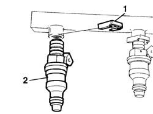

1058A70 injector(1) of cng injection system - r rwith cng manifold pipe removed includes gasket replacement
- Path
- Procedures > 10 ENGINE > 1058 CNG FUEL SYSTEM > 1058A gas circuit multi point injection > 1058A70 injector(1) of cng injection system - r rwith cng manifold pipe removed includes gasket replacement
- Kind
- repair procedure (removal / refitting; the operation number is the code)
- Applies to
- all engines; all production periods; only with equipment: BIPOWER
- Interactive page
- https://sloeber94.github.io/elrnDB-fDbl/en/#/2584552
Applies to: all engines; all production periods; only with equipment: BIPOWER
 Removing
Removing
 Refitting
Refitting1. Remove the safety clip.
2. Remove the press-fit fuel injector complete with seal.

Applies to: all engines; all production periods; only with equipment: BIPOWER
Refitting
RemovingReplace the seals before refitting.
Fit the injector into its seat on the manifold.
Fit the retaining clip.